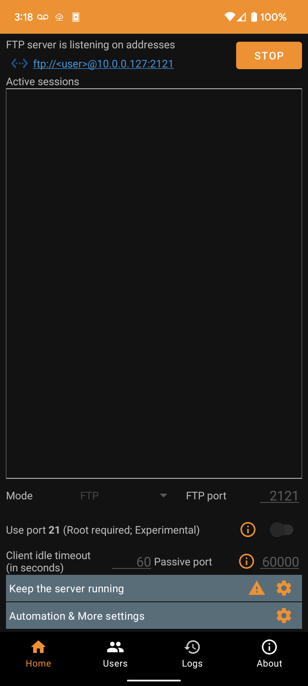
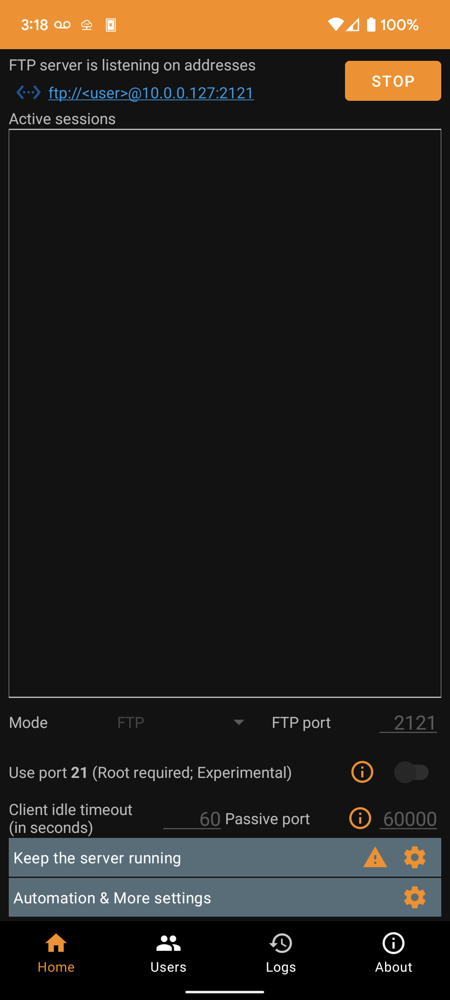
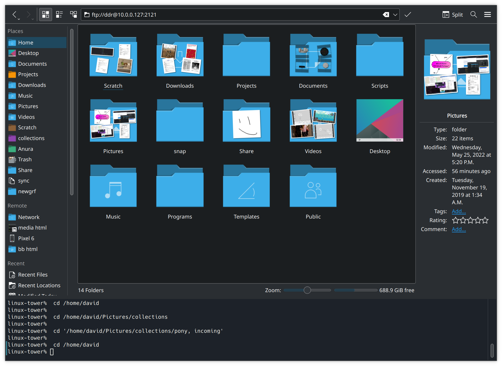
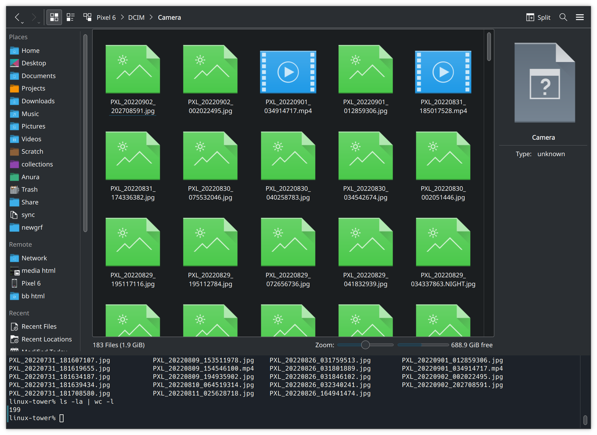

Managing Files On A Phone
The Problem
Let's say you've accumulated about 20,000 files on your phone which you would like to move to a computer. The bulk of them are photos, but there's some stuff you've downloaded using multiple chat apps as well. In short; you've got yourself a non-homogenous mess.
There's a few options you have. You know you can send yourself stuff by email or a chat app, but those have a file size limit. You could work around that with dedicated service like Wormhole, but it still has limitations. Besides, just sending the files wouldn't help you organize your phone. And the on-phone apps are struggling with your photos folder.
How about cloud sync? If you've got Apple, in my experience, you're going pay some money, sync for a month, and find a perfect duplicate of your files labelled "failed to sync". There's also the worrying question of "is it syncing my full phone to my empty computer, or my empty computer to my full phone?" If you're on an Android, I do not think it is ideal from a privacy perspective either. Like with gravity, what goes up to The Cloud will come down from The Cloud at some point. A company gets hacked, goes bust, sells out. Or someone gets access to your account by scamming their support.
Besides, you probably don't have the world's best internet uplink anyway. Your telecommunication infrastructure was designed for cable TV, and your internet providers enjoy a sweet a monopoly and have no reason to offer a decent service.
My Solution
I ended up solving this problem for myself by installing an app on my phone, an FTP¹ server. Then I could use another program on my computer to manage the files on my phone via FTP; move them around, and copy them off. Here's how I did it in detail. The software used is not important, as it's nicely modular and you can substitute other software at any step.
On The Phone
I grabbed Banana Studio's FTP Server for the phone part of this. It seems a respectible one, though it's always hard to tell with these things. (If you use an iPhone, there are apps for that as well. e.g., this one I found on the first page of Google.)
In the FTP Server app, I've configured a user for myself like this:
 Then, starting the server and connecting to the address given at the top:
@10.0.0.127:2121. There are no active sessions. Some configuration and warnings appear at the bottom, but they are not relevant for this.">
Then, starting the server and connecting to the address given at the top:
@10.0.0.127:2121. There are no active sessions. Some configuration and warnings appear at the bottom, but they are not relevant for this.">
{kind=link}
On The Computer
To connect to the address on the computer, we need an FTP client. Filezilla is a good one for Windows, Panic Inc.'s Transmit is a good one for Mac, but since I'm using KDE on Ubuntu, my default file manager Dolphin (the equivalent of Windows Explorer/File Explorer) just comes with one.

Plugging in the ftp:// URL we got from the FTP server app,

and entering our password, we are now browsing our phone and can move the files around as desired from our computer.
 Since the files aren't leaving our immediate vicinity, this is also faster and more secure than a cloud-based solution can be. 🙂
Since the files aren't leaving our immediate vicinity, this is also faster and more secure than a cloud-based solution can be. 🙂
{kind=link}
As a fun bonus with KDE; through the magic of FUSE and having a terminal integrated with my file manager, I can also run basic Linux commands against my phone filesystem now. For example, to roughly count the number of pictures I took since I last cleared pictures off my phone: 
{kind=link}
Further Remarks
There is one other option I haven't touched upon - KDE Connect offers a nice file browsing feature among its many other useful features. (And it is cross-platform! Not just for Linux and Android.) However, there is currently one issue with it - KDE Connect can't let me manage my phone downloads folder "for security reasons". This puts it out of the running for this article, since managing my downloads is half of what I need it for. However, it has worked in the past, continues to work partially at the moment, and may work fully again in the future. So it gets an honourable mention, and it requires much less configuration than the FTP server option I've went with in this article.
For all that Linux has a reputation as hard to use, I find in some ways it's far easier to use than Windows or Mac. Today, because Dolphin supports SSH as well as FTP for browsing out of the box, it let me copy a screenshot from my phone directly to my web server using the standard graphical interface I'm used to. I've got both locations bookmarked, and having everything available under a standard point-and-click interface makes things so easy.
And if anything breaks? It's all discreet software components, you can switch them out for a different component if need be. Files on a disk are pretty much the universal language of data storage, and FTP is a pretty universally available transfer mechanism for them. 🙂
¹: When I say FTP, I'm including SFTP in it. Like with HTTP/HTTPS, the S stands for "Secure". I'm not too concerned about security for this setup, because I'm going over a local-area network. It should be reasonably free from snooping as it's all physically within about a meter of me here. If you're routing your FTP traffic over the internet, you should absolutely make sure you're using SFTP vs FTP. Any FTP software worth its salt will support both protocols. ⮌